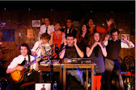
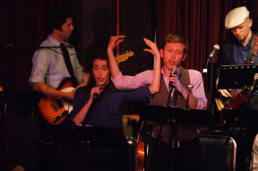

WHAT IS LOST MOON RADIO?
Who We Are
LOST MOON RADIO is a group of writers, performers, artists, and musicians who create dry comedy and wet rock ‘n roll. We do this through our live performances, videos, audio tracks, and general tomfoolery. In an age where culture can seem overwhelmed by discord, we believe in the power of comedy to bring people together in shared moments, creating spontaneous communities of optimism and joy.
Also, we just really love jokes.
Our Live Show
Our live show – also entitled “LOST MOON RADIO” – is performed regularly in the Los Angeles area. At each installment, audiences watch as iconoclastic disc jockey Jupiter Jack spins tracks on his late-night rock 'n roll radio show. But when Jack "plays" a record, what we actually see are sketches and songs performed live by onstage actors and a five-piece band. It’s an evening of original comedy, music, and reflections on the modern age blended together to create a unique and dynamic experience.
History
LOST MOON RADIO was founded in January 2009 by Ryan Harrison, Rich Ramberg, Dylan Ris and Frank Smith as a way to explore their shared love of comedy and music. Since the first performance at St. Nick’s Pub, the company has grown in size and ambition, now encompassing fifteen members who perform four main stage shows and numerous one-night engagements each year. Our run at the 2011 Hollywood Fringe Festival earned the LA Weekly “Best of the Fringe” award as well as the “Fringe Award for Comedy” from the Festival.
LOST MOON RADIO continues to explore the intersection of comedy and music throughout various media, from releasing a holiday album, It Had to Be Yule, to launching our video production arm. Across the live and recorded mediums, LOST MOON RADIO continues to push itself and its members to venture into new territory, harnessing the creative force that comes from taking risks and using a secret and ancient alchemical process to turn that into jokes.